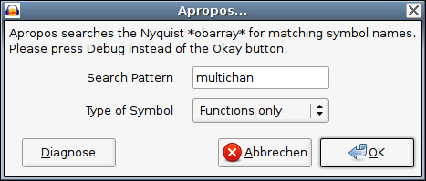
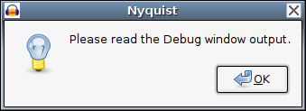
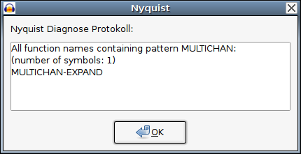

Audacity Support Forum / Audacity and Nyquist / Nyquist Reference Manual / Nyquist Examples and Tutorials
Hinweis: Alle [Kommentare] und [Erklärungen] sind in eckigen
Klammern geschrieben, damit sie nicht mit
Hinweis: Es gibt Audacity Plugins
Wichtig: im Plugin Header darf nur *ein* Semikolon [Strichpunkt] am Anfang der Zeile stehen, weil diese Zeilen von Audacity ausgewertet werden. Der Nyquist Interpreter hingegen hält alles, was nach dem ersten Semikolon bis zum Ende der Zeile steht für einen Kommentar und ignoriert es einfach. In einem Nyquist Kommentar *ausserhalb* des Plugin Headers können auch mehrere Strichpunkte hintereinander verwendet werden.
;nyquist plug-in ;version 1 ;type typ ;name "name" ;action "text" ;info "text"
|
'Erzeugen' [Generieren] Plugin | ||
|
'Effekt' Plugin | ||
|
'Analyse' Plugin | ||
|
Name des Plugins, wie er im Audacity Menü erscheinen soll | ||
|
Text, der erscheinen soll, während das Plugin arbeitet | ||
|
Text, der am oberen Rand des Plugin Fensters angezeigt werden soll |
Die Zeichenfolge '\n' innerhalb von 'text' erzeugt einen Zeilenumbruch.
Es ist leider nicht möglich mit einem Backslash '\' am Ende einer Zeile den Zeilenumbruch selbst ungültig zu machen. Der Text in den 'action' und 'info' Zeilen muss also in jeweils einer einzigen Zeile stehen.
Die 'info' Zeile ist optional und kann auch weggelassen werden.
Schieberegler
;control variable-name "text-links" variable-typ "text-rechts" anfangswert minimum maximum
|
ein Lisp Symbol | ||||||||||
|
ein Zahlentyp: | ||||||||||
|
|||||||||||
|
Text, der links vom Regler erscheinen soll | ||||||||||
|
Text, der rechts vom Regler erscheinen soll | ||||||||||
|
Wert des Reglers beim ersten Start des Plugins | ||||||||||
|
Wert des Reglers bei Linksanschlag | ||||||||||
|
Wert des Reglers bei Rechtsanschlag | ||||||||||
Der eingestellte Wert des Reglers wird in der Variablen an das Programm übergegeben.
Die Übergabe der Variablen von Audacity an Nyquist ist in der Funktion 'nyx_set_input_audio' in der Datei 'lib-src/libnyquist/nyx/nyx.c' im Audacity Quelltext definiert.
Audacity übergibt an Nyquist folgende Variablen:
|
der Audacity Sound [der markierte Teil der Tonspur] | ||||||||||
|
die Anzahl der in 's' enthaltenen Samples | ||||||||||
|
die Samplefrequenz der Audacity Tonspur | ||||||||||
|
eine Liste aus drei Werten: | ||||||||||
|
|||||||||||
Die Länge des Audacity Sounds in Sekunden kann auf verschiedene Arten berechnet werden:
|
teilt die Anzahl der Samples durch die Samplefrequenz | ||
|
gibt den 'time-stretch' Wert aus der *warp* Variablen zurück |
Roger Dannenberg schreibt:
Die *warp* Variable gehört zum internen Teil der Nyquist Implementation, und sollte nicht direkt gelesen oder geschrieben werden. Um die Länge des markierten Teils der Audacity Tonspur aus der *warp* Variablen zu ermitteln, sollte die 'get-duration' Funktion verwendet werden:
(get-duration 1)
Dies beantwortet die Frage: "Wenn ein Nyquist Verhalten [behaviour]
normalerweise eine Länge
Wenn es sich um eine Stereospur handelt ist 's' ein Array [Feldvariable].
Da die Nyquist
(if (arrayp s)
(vector
(snd-function (aref s 0)) ; linker Stereokanal
(snd-function (aref s 1))) ; rechter Stereokanal
(snd-function s)) ; Monosignal
|
testet, ob es sich bei 's' um ein Array [Feldvariable] handelt. | ||
|
macht aus den beiden Mono-Signalen am Ende wieder ein Stereo-Signal. Ein 'vector' ist ein ein eindimensionales Array. | ||
|
ist der linke Stereo-Kanal [das nullte Feld des Arrays]. | ||
|
ist der rechte Stereo-Kanal [das erste Feld des Arrays]. |
Wichtig: Nyquist in Audacity kann maximal zwei Signale [Stereo]
gleichzeitig bearbeiten. Wenn in Audacity mehr als eine Tonspur ausgewählt
wurde, werden alle Tonspuren *nacheinander* mit maximal zwei Kanälen
gleichzeitig [Stereo] an Nyquist übergeben. Es ist mit Nyquist in Audacity
momentan nicht möglich, z.B. Tonsignale von einer Audacity Tonspur in eine
andere zu kopieren
multichan-expand
Es gibt im Audacity 'nyquist' Ordner in der Datei 'nyquist.lsp' eine Funktion 'multichan-expand', die auch Signale mit mehr als einem Kanal [z.B. Stereo Arrays] verwalten kann:
(multichan-expand (function &rest arguments))
Die 'arrayp' Konstruktion von oben kann also auch folgendermassen geschrieben werden:
(multichan-expand #'snd-function s)
Meiner Meinung nach ist das aber wesentlich kryptischer [und damit weniger verständlich] zu lesen als die 'arrayp' Konstruktion von oben.
Das Ergebnis der letzten Berechnung im Programmablauf des Nyquist Plugins wird an Audacity zurückgegeben. Je nachdem, welcher Datentyp dabei an Audacity zurückgegeben wird, passiert folgendes:
|
der zurückgegebene Sound wird in die in Audacity markierten Auswahl in die Tonspur eingefügt. Wenn der zurückgegebene Sound kürzer oder länger als der Originalsound ist, wird die Auswahl in Audacity entsprechend vergrössert oder verkleinert. Wird ein Mono-Sound in eine Stereo-Tonspur eingefügt, so wird auf *beiden* Stereo-Kanälen der gleiche Mono-Sound eingefügt. Wenn ein Stereo-Sound in eine Mono-Tonspur eingefügt werden soll, erscheint eine Fehlermeldung. | ||
|
es erscheint ein Fenster, in dem die an Audacity zurückgegebene Zeichenkette [string] angezeigt wird. | ||
|
wird eine speziell formatierte Liste [siehe unten] an Audacity zurückgegeben, erscheint unter der Tonspur eine Spur mit Textmarken. |
Die Liste für die Textmarken muss folgendes Format haben:
((fliesskommazahl "text") (fliesskommazahl "text") ... )
|
die Zeit in Sekunden, an der die Textmarke eingefügt werden soll. | ||
|
der Text, der in der Textmarke angezeigt werden soll. |
Hinweis: Nyquist
Plugin Header
Der Plugin Header ist bis auf die 'version' Zeile identisch mit dem der 'version 1' Plugins.
Nyquist 'version 2' plugin header:
;nyquist plug-in ;version 2 ;type typ ;name "name" ;action "text" ;info "text"
Nyquist 'version 3' plugin header:
;nyquist plug-in ;version 3 ;type typ ;name "name" ;action "text" ;info "text"
Die Syntax der einzelnen Zeilen des Plugin Headers sowie auch die Syntax für die Schieberegler ist die gleiche wie oben.
Neu hinzugekommen sind:
Texteingabefeld - neu in 'version 2'
;control variable-name "text-links" string "text-rechts" leerzeichen leerzeichen
Der im Eingabefeld eingegebene Text wird in der Variablen als Zeichenkette [string] an das Programm übergegeben.
Auswahlbox - neu in 'version 3'
;control variable-name "text-links" choice "text-1,text-2,..." anfangswert leerzeichen leerzeichen
|
für jeden 'Text' wird ein Listeneintrag erzeugt. | ||
|
der Listeneintrag als Zahl, der beim ersten Start des Plugins angezeigt werden soll. |
Die Listeneinträge werden als Ganzzahlen verwaltet. Der erste [oberste] Listeneintrag hat die Nummer Null. Der ausgewählte Listeneintrag wird in der Variablen als Ganzzahl an das Programm übergegeben.
Beispiele für Texteingabefeld und Auswahlbox finden sich im Quelltext des 'Apropos' Plugins.
Da nicht alle Funktionen, die im Nyquist Manual beschrieben sind auch in Audacity implementiert sind und auch überhaupt nicht alle Nyquist Funktionen im Nyquist Manual dokumentiert sind [Lisp ist eine 'programmierbare Programmiersprache', es sind also nur die Funktionen dokumentiert, die als 'stabil' angesehen werden], ist es oft hilfreich ein Werkzeug zu haben, mit dem herausgefunden werden kann, ob die gewünschte Funktion in Audacity überhaupt vorhanden ist.
Prinzipiell sind nur alle Nyquist Funktionen, die mit 'snd-...' beginnen innerhalb des Nyquist Interpreters in C implementiert [im Nyquist Manual heissen sie 'low-level' Funktionen], während *alle* anderen Funktionen in den Dateien im Audacity 'nyquist' Verzeichnis in Lisp implementiert sind und damit nachträglich jederzeit verändert oder erweitert werden können, ohne dass Audacity dazu neu kompiliert werden muss [es sei denn die jeweilige Lisp Funktion braucht eine in C implementierte Nyquist 'low-level' Funktion, die in Audacity noch nicht vorhanden ist].
Alle Nyquist/XLISP Symbole [z.B. alle Variablen- und Funktionsnamen] sind im XLISP *obarray* gespeichert. Um in Audacity herauszufinden, ob eine bestimmte Funktion vorhanden ist kann z.B. zuerst mit einer Funktion aus dem Audacity 'Erzeugen' [Generieren] Menü eine beliebige Tonspur erzeugt werden und dann mit dem 'Nyquist Prompt' [Eingabeaufforderung] aus dem Audacity 'Effekt' Menü [funktioniert nicht ohne markierte Audacity Tonspur] z.B. folgendes eingegeben werden:
(print (fboundp 'snd-abs))
Wichtig: bitte danach nicht auf 'OK' sondern auf 'Diagnose' [Debug] klicken.
Es erscheint zuerst eine Meldung 'Nyquist gab keine Audiodaten zurück' oder ähnlich, dort bitte auf 'OK' klicken, danach erscheint ein Fenster 'Nyquist Diagnose Protokoll' mit der Ausgabe der 'print' Funktion:
|
Funktion vorhanden | ||
|
Funktion nicht vorhanden |
Ich habe das in der Vergangenheit so oft gebraucht, dass ich ein Audacity Nyquist 'Apropos' Plugin geschrieben habe:
Download: Apropos-Plugin
Das 'Apropos' Plugin istalliert sich im Audacity 'Erzeugen' [Generieren] Menü. Es durchsucht mit Hilfe eines Suchmusters das Nyquist/XLISP *obarray* nach Variablen- und/oder Funktionsnamen:

Hinweis: wird *kein* Suchmuster [Search Pattern] angegeben, erscheinen *alle* Symbolnamen in alphabetischer Reihenfolge.
Wichtig: bitte im Apropos Plugin Fenster nicht auf 'OK' sondern auf 'Diagnose' [Debug] klicken.
Es erscheint zuerst ein Fenster, dass mich daran erinnern soll, dass ich vergessen habe auf 'Diagnose' [Debug] zu klicken:

Danach, aber nur wenn auf 'Diagnose' [Debug] geklickt wurde, erscheint das Fenster mit den Ergebnissen, sortiert in alphabetischer Reihenfolge:

Audacity Support Forum / Audacity and Nyquist / Nyquist Reference Manual / Nyquist Examples and Tutorials